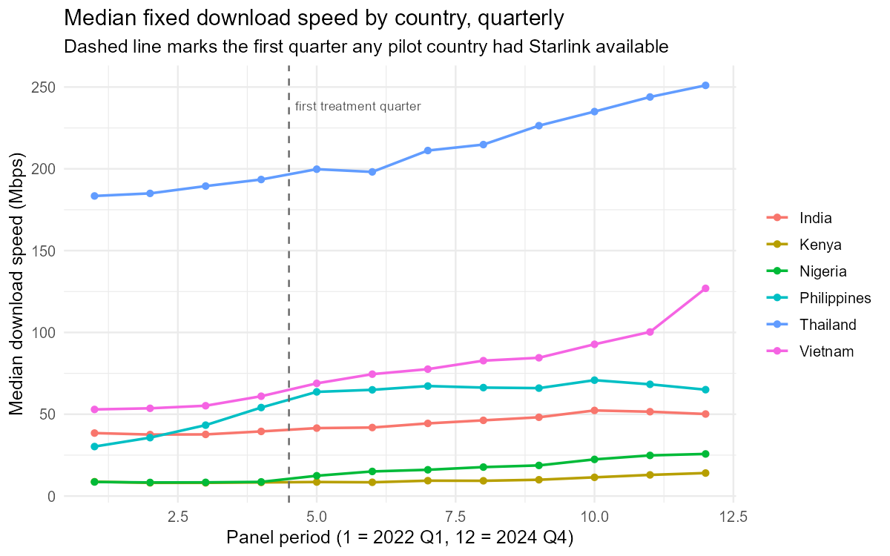
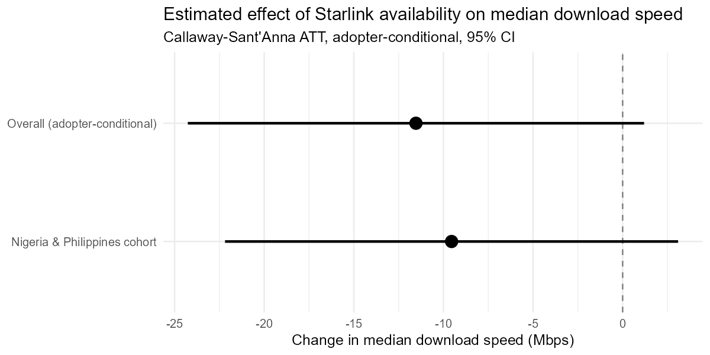
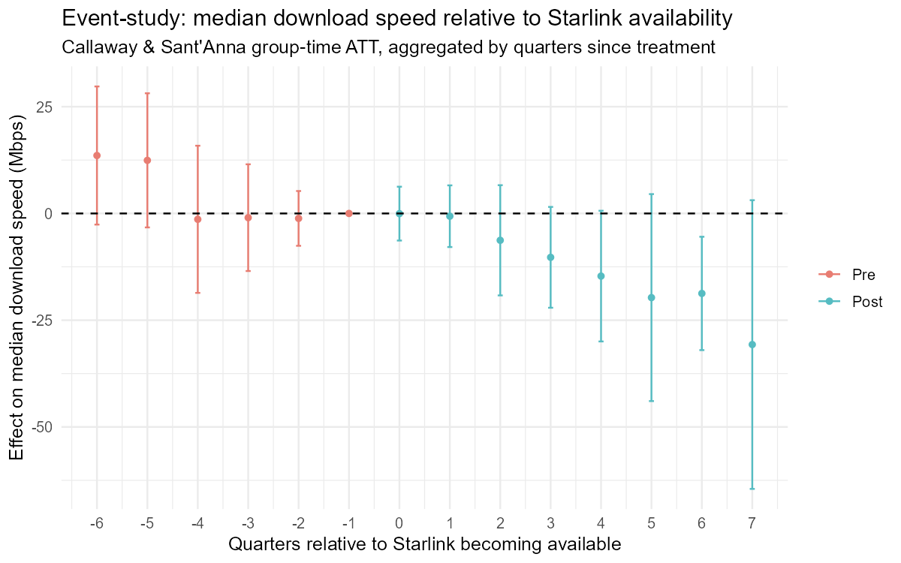
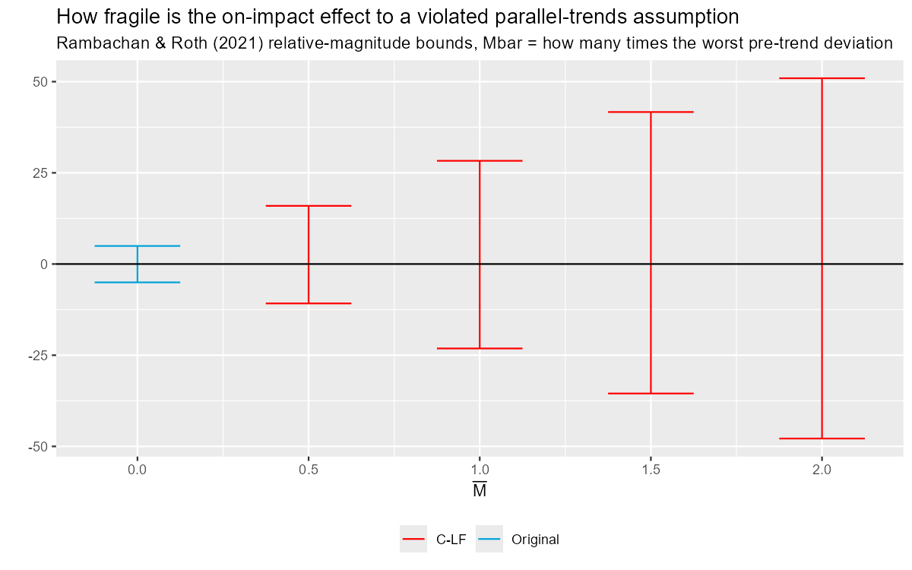
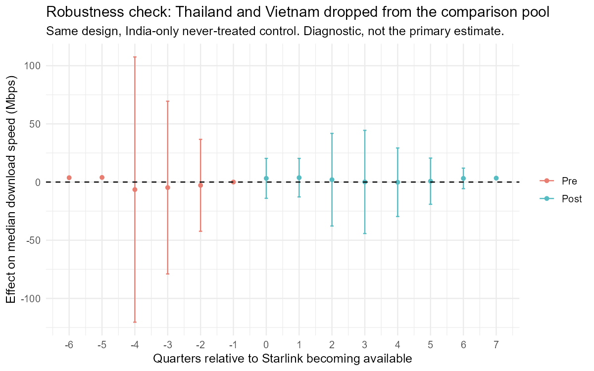

Every rural broadband promise sounds like this one
For as long as there's been broadband, there's been a "last mile" problem: the final stretch of cable or fiber between a network's backbone and an individual house is the most expensive part to build and the least profitable to run, and it gets worse the more spread out the houses are. Telecoms have been promising to solve it with everything from rural DSL subsidies to WiMAX to geostationary satellite for two decades, and it has stayed mostly unsolved for the same two decades.
Starlink's pitch is that low-earth-orbit satellite internet is different: no trench to dig, no pole to plant, just a dish on a roof and a subscription. It has shipped to well over a hundred countries in under five years, and wherever it lands, the same story gets repeated -- speeds that beat whatever DSL or legacy satellite service used to be the only option.
Anecdotes like that are easy to find and easy to believe, because they're often true at the individual level: someone who upgrades from a 10-year-old satellite dish to Starlink is going to see a faster number on their own speed test, almost by construction. What's much less checked is whether that individual jump shows up as an aggregate, region-level effect once you control for who adopts and when, using data nobody had a reason to make look good.
Because the answer changes what gets funded
Governments and telecom regulators are actively deciding, right now, how much public money to put behind satellite internet versus subsidized fiber buildout for underserved regions. The US alone has tens of billions of dollars in rural broadband subsidy programs where "should this go to fiber or to satellite" is a live allocation question, not a hypothetical one. If Starlink's real-world effect on measured speed is close to what gets claimed in press coverage, that's a legitimate argument for leaning on it more. If the aggregate effect is a lot smaller than the anecdotes suggest, once you strip out who was already going to adopt fastest and what else was changing in the same market at the same time, that's a real reason to be more careful about betting policy dollars on it.
This isn't a hit piece looking for a "gotcha," and it isn't a press-release rewrite either. It's the same question a skeptical analyst would ask before recommending a client put money behind the claim: does the number survive contact with independent data.
The setup
Six countries, quarterly, 2022 through 2024. Three got Starlink partway through the window -- Nigeria and the Philippines both in the first quarter of 2023, Kenya in the third quarter of 2023. Three didn't get it at any point in the window -- India, Vietnam, and Thailand, all confirmed still unlicensed or unlaunched years past this panel's end date. The outcome is median fixed-broadband download speed from Ookla's own published Speedtest Open Data, aggregated from tile-level test records, not from anything Starlink or SpaceX published.
Because the three treated countries flip at two different times, this isn't a simple before/after comparison -- it uses the Callaway-Sant'Anna staggered-adoption estimator, comparing each treated cohort against the countries that hadn't been treated yet.
The pilot gate, checked before anything else
Before trusting any estimate out of this design, the treated-to-be countries and the comparison countries need to have been on roughly parallel paths before treatment happened -- otherwise the "effect" the estimator finds could just be pre-existing divergence that had nothing to do with Starlink. That was checked first, with the design and stopping rules committed to in an analysis plan before this panel was pulled.

No statistically distinguishable pre-existing trend between the treated-to-be countries and the comparison countries (interaction p = 0.98, testing a period × treated-group term over the pre-treatment quarters only). Worth looking at the chart anyway: Thailand and Vietnam sit on a much higher and steeper baseline than Nigeria and Kenya well before anyone in this panel had Starlink. The slopes weren't statistically different in the pre-period, but the levels were never close -- keep that in mind for what follows.
The headline number

The primary estimate is −11.5 Mbps overall (doubly robust, clustered by country, SE in the 6-7 Mbps range across repeated bootstrap runs), and −9.5 Mbps for the Nigeria/Philippines cohort specifically. Both confidence intervals sit almost entirely below zero and brush up against it, not comfortably straddling it. Reported as it came out, negative and in the direction a reader would least want to see if they were hoping this project would confirm the marketing story.
(Kenya's cohort produced a similar point estimate, around −16.8 Mbps, but re-running the estimator back to back gave wildly different standard errors for that cell -- 0.03 in one run, 12.5 and 6.3 in the next two -- from clustering by country with only six clusters total and one of them carrying an entire treatment cohort by itself. That instability is disclosed rather than hidden behind whichever run looked cleanest, and Kenya's number is left out of the chart above for it.)

The event study is arguably more informative than the single headline number. Pre-treatment estimates hover near zero with wide bands, consistent with the pilot gate passing. On impact (quarter 0) the estimate is essentially flat -- no jump. What follows isn't flat: the gap widens quarter over quarter, reaching roughly −20 to −30 Mbps by a year and a half after treatment, though the bands stay wide enough that only the far right of that window clears conventional significance on its own.
Nigeria's own median speed did rise across this panel, from about 8 Mbps to about 25 Mbps by the end of 2024 -- a real increase. The reason the causal estimate is negative is that the comparison countries rose faster over the same stretch: Thailand's median went from roughly 183 to 251 Mbps and Vietnam's from roughly 53 to 127 Mbps across the same three years, both consistent with well-documented domestic fiber buildouts running at the same time as Starlink's rollout elsewhere. A difference-in-differences design nets out common trends against the comparison group by construction, so a comparison group that happens to be in the middle of its own unrelated broadband boom will pull the estimated "effect" of the thing being studied down, not because the treated countries got worse, but because the design can't tell "Starlink helped a little" apart from "everyone's comparison got a lot better for other reasons" with only six countries and no fiber-buildout control built in yet. This is exactly the competing-intervention confound named in advance in the limitations file, now visible in the actual numbers instead of just a theoretical worry.
How fragile is that number
A pre-trend p-value passing is not proof the parallel-trends assumption holds after treatment starts -- it's just the best pre-treatment check available. So this also runs Rambachan & Roth's (2021) sensitivity bounds: how much would a post-treatment trend violation have to exceed the worst pre-treatment deviation actually observed, before the on-impact effect stops being distinguishable from zero.

The on-impact estimate is already close to zero (original 95% CI: roughly −5.0 to +5.0 Mbps, assuming exact parallel trends), and it stays centered near zero as the sensitivity bound relaxes -- at Mbar = 1, allowing a post-treatment trend violation as large as the worst one actually observed before treatment, the interval widens to roughly −23 to +28 Mbps but is still centered on zero, not anchored to a positive effect that sensitivity is eating away at. There's no fragile positive finding here to protect -- the on-impact effect was never distinguishable from zero in the first place, sensitivity bounds or not. The negative overall number comes entirely from what happens in the quarters after impact, shown in the event study above.
Checking that explanation instead of just asserting it
A theory about why an estimate came out negative is worth nothing until it's checked against the same data. So: drop Thailand and Vietnam from the comparison pool entirely and re-run the identical design with India as the only never-treated country left. If the fiber-buildout explanation is right, the estimate should move toward positive. If it's wrong, or India alone is a bad comparison for some other reason, it shouldn't.

It moved. The overall estimate flips from −11.5 Mbps (primary, six-country) to +1.9 Mbps with Thailand and Vietnam excluded -- checked six times back to back given how the Kenya cell above turned out to be numerically unstable, and this overall number's standard error moved around somewhat run to run (1.4 to 3.2 Mbps across six checks so far) but the interval straddled zero in every single one. Broken out by cohort, the Nigeria/Philippines group alone comes back at +4.2 Mbps, and unlike the Kenya cell, this one's standard error (0.73) reproduced identically across all six reruns rather than swinging around, so the "the CI doesn't cover zero" read on it looks like a real feature of this thinner design rather than a bootstrap artifact. Kenya's own comparison against India alone comes back negative (−4.2 Mbps) but with an uncomputable standard error, so this narrower design has nothing reliable to say about Kenya either way.
Worth reading that plainly rather than rounding it up to "so Starlink works after all." A confounded control group was a specific, named, checkable explanation for the negative primary result, and checking it did shift the number the direction that explanation implies -- that's real and worth reporting. But +4.2 Mbps for one cohort, on a four-country panel with a single never-treated comparator, is a modest, adopter-conditional shift, not the kind of transformation the marketing story around Starlink would suggest, and it rests on the assumption that India alone is a valid comparison for Nigeria and the Philippines, which hasn't been checked here beyond the pre-trend test passing (p = 0.78, on a single treated-country-worth of pre-period slope, so a much less demanding test than the six-country version above).
The claim this design can actually support
Ookla only has data where someone ran a speed test. A country flipping to "Starlink available" doesn't mean the whole country adopted it -- it means some subset of people who were already unhappy enough with DSL or old-generation satellite to buy a dish, install it, and then also happen to run a speed test. Every number on this page is the answer to "among people who show up in speed-test data after Starlink becomes available, how much faster does the measured median look," not "how much did the typical household's internet speed change." Those are different claims. Conflating them is exactly the kind of overclaim this project exists to check for, on someone else's claim as much as its own.
Worth being just as blunt about this as everything else on the page: this pilot did not run a formal synthetic-control test isolating the comparison countries' own fiber buildouts from Starlink's effect for Nigeria, the Philippines, or Kenya. What's shown above is Thailand's and Vietnam's raw trajectories looking like exactly the kind of competing intervention that would explain a difference-in-differences estimate coming out negative even while the treated countries' own speeds rose -- a plausible read of the pattern, not a test built to isolate it. The full list of what this pilot does and doesn't cover is in the limitations file in the repo, not left for a reader to dig up separately.